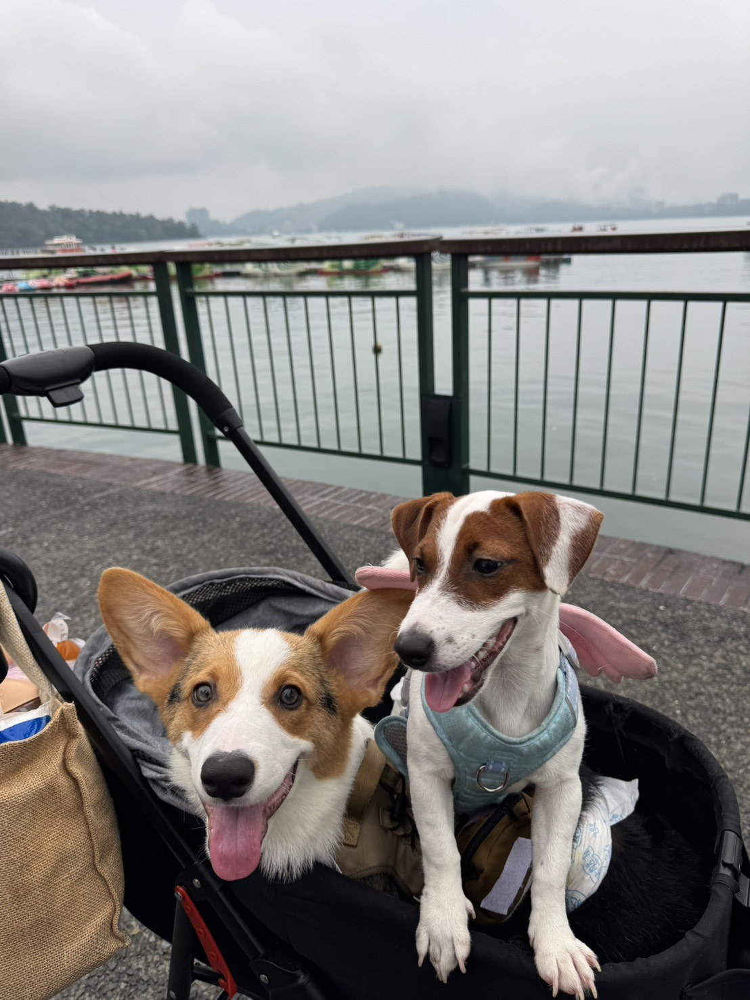

01 / ABOUT
關於我
你好，我是胡元錩，目前就讀亞洲大學 AI 系大三。國中時就讀明道中學普通科，高中就讀明道商業經營科。高中期間，我曾擔任學生會活動長，參與並籌辦多場活動，也撰寫活動企劃書；此外，我曾擔任學生議會技高三代表，為在校生表達意見、爭取學生權益。現在我擔任系學會會長，持續投入活動規劃與系上事務。平時我喜歡打電動、策劃活動，也喜歡玩 DJ，曾接過一些演出。我最近也在研究易經，家裡還有兩隻狗狗，一隻柯基和一隻傑克羅素。對不同領域的新知我都保持好奇。至於未來想當神棍嘛——這是開玩笑的，真正的職涯方向還在探索中；目前希望繼續累積 AI、活動企劃與表演相關經驗。
AI 揭露：使用 ChatGPT 協助設計版面與整理自介文案；未使用 AI 生成圖片。
02 / EXPERIENCE
學習與經歷
03 / MY DOGS
我的狗狗
家裡有兩位可愛的夥伴：一隻柯基和一隻傑克羅素。這張照片記錄了牠們一起出門散步的時光。

04 / INTERESTS
最近感興趣的事
活動策劃DJ電玩易經人工智慧柯基與傑克羅素